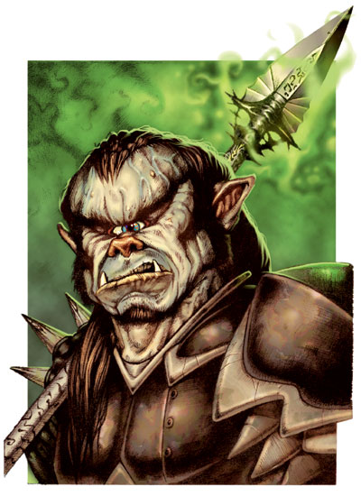

格乌什（Gruumsh）

独眼巨人，无眠者
伟大神力
邪徽：眼眶骨

居住位面：Acheron
阵营：混乱邪恶
神职：兽人，战争，领地
信徒：兽人，半兽人
牧师阵营：混乱邪恶，混乱中立，中立邪恶
领域：混乱，邪恶，力量，战争
偏好武器：长矛
兽人之神格乌什是属于混乱邪恶阵营。他的外貌看上去就和一个身着笨重粗陋的黑色全身甲的兽人一样。他只在脸的中央有一只永远睁着的独眼。他对柯瑞隆・拉瑞斯安，摩拉丁及他们的追随者怀有着一种独特的仇恨。相传，在许多年以前，柯瑞隆・拉瑞斯安在一场战斗中打瞎了格乌什的左眼。当然，也有一些兽人牧师对这个传说表示质疑，视之为胡说，他们认为精灵之神是偷去那只眼，因为他绝不可能在公平的战斗中打败格乌什。
教义
格乌什要求他的信徒尽力追求强大的力量，并认为世界该当是弱肉强食的。他默许他的信徒们从自己的部落中选出最孱弱的人来，并按所谓“格乌什的旨意”取走弱者的领地，乃至一切。他并不在意他的属民，也就是兽人社会中所存在的孤立与不友好气氛，他不在意他们是否团结。不断的战争是格乌什的一大信条，当然，格乌什也并不反对在情况的允许的条件下用殖民的方法来占领一个地区。
格乌什不喜欢任何非兽人族的智慧生物和他们制造出的东西，而且他特别对精灵一族怀有强烈的憎恶感（或许是由于他的眼睛）。他也同样厌恶那些与兽人争夺山地的控制权并获胜了的矮人们。一个忠诚于格乌什的社会组织，比如一个兽人部落，必须也按格乌什的意志严格地确认自己的敌人，比如上述两者。
神职人员与神殿
格乌什的牧师都为能成为自己所在兽人群落的战争领袖，或是那些领袖的战争智囊为终极目标。他们同样也要经历兽人部落“排除恶劣因子”的过程。就算是在平时，格乌什的牧师也要穿上盔甲。
格乌什的神殿或是神龛一般坐落于一个兽人居住区的核心部位。他们一般都环境恶劣，是充斥着辛辣烟雾和恶臭积血的让人难以忍受的地方。神殿或是大些的神龛总是保有供奉活物祭品的祭坛和能容许多人竞技的角斗场。
格乌什
战士20级/牧师9级/野蛮人9级
中体形外界生物（混乱，邪恶，兽人）
神格等级：16
生命骰：20d8+220（外界生物）加20d10+220（战士）加9d8+99（牧师）加9d12+99（野蛮人）（1178hp）
先攻调整值：+11（+7敏捷，+4精通先攻）
速度：40尺（全身甲，基本速度70尺）
防御等级：78（+1敏捷，+16神格等级，+29天生防御，+13盔甲[+5重型再生全身甲]，+9偏转）
攻击加值：+5锐锋混乱邪恶长矛 +83/+78/+73/+68近战；或者法术 +73近战接触，或 +62远程接触，攻击检定掷骰总是取20，伤害按重击伤害计算
伤害加值：+5锐锋混乱邪恶长矛 1d8+50/18-20/*3；或者使用法术，伤害检定总是按最大结果计算（长矛造成58点伤害）
占据/威胁范围：5尺*5尺/5尺（使用长矛时10尺危险范围）
特殊攻击：每日12次斥责不死生物，领域神力，超凡神格能力，类法术能力
特性：兽人种族特性，神格免疫，伤害减免 67/+5，火类伤害免疫，神术自发性施法，理解、交谈及阅读所有语言并直接于任何16里内的生命存在交谈，远程沟通，神祗国度，随意无误传送，随意位面旅行，健步如飞，每日3次野蛮人狂暴，离奇闪避（不能被夹击），SR48，神力光环（16里，DC35）
豁免调整值：坚韧 +60，反射 +54，意志 +56。豁免检定掷骰自然结果总是取20
能力值：力量 46，敏捷 25，体质 33，智力 24，感知 25，魅力 29
技能调整值：唬骗 +48，攀爬 +62，专注 +62，手艺（制作盔甲） +84，手艺（金属加工） +84，手艺（石工） +84，手艺（制作武器） +84，交涉 +31，威吓 +59，跳跃 +62，知识（奥术） +58，知识（历史） +46，知识（宗教） +36，聆听 +60，探知 +46，搜索 +55，察言观色 +52，辩识法术 +41，侦察 +57，游泳 +67，野外知识 +32。技能检定掷骰自然结果总是取20
专长：警觉，盲斗，顺势劈，格斗反射，制作魔法武器与盔甲，闪避，法术强效，忍耐，专家，高级顺势劈，提升忍耐，精通冲撞，精通重击（长矛），精通卸除武器，精通先攻，精通绊摔，钢铁意志，机动，猛力攻击，即时备战，飞跑，法术渗透，跳跃攻击，法术定发，精通破坏武器，高级专家，追踪，武器专攻（长矛），武器专精（长矛），旋风攻击
兽人种族特性：黑暗视觉，在光亮处攻击加值减1
神格免疫：属性伤害，属性吸取，酸，冷，即死效果，疾病，瓦解，电，能量吸取，心智影响效果，麻痹，毒，睡眠，震慑，变形，监禁，放逐。
超凡神格能力：改变形态，改变现实，改变大小，指明攻击，毒击（矮人），毒击（精灵），操控生物（兽人），神力战斗熟稔，神力风暴，神力护盾，神力武器专攻（长矛），神力武器专精（长矛），额外领域（混乱），战争迷雾+，死亡之手，增强伤害减免，生命与死亡，区域神力风暴，击伤敌人，带“+”为独特能力，下文将说明。
领域神力：施展混乱领域法术时，施法者等级加1；施展邪恶领域法术时，施法者等级加1，每日16次力量专长（持续1轮得到+9力量增强加值）
类法术能力：格乌什可以相当于施法者等级为29级使用混乱领域和邪恶领域类法术能力，以相当于施法者等级为28使用其他类法术能力。类法术能力的基本豁免DC为35+法术等级。Animate objects,Bigby's clecnched fist,Bigby's crushing hand,Bigby's grasping hand,blade barrier,blasphemy,bull's strength,chaos hammer,cloak of chaos,create undead,desecrate,dispel good,despel law,divine power,endure elements,flame strike,magic circle against good,magic circle against law,magic vestment,magic weapon,power word blind,power word kill,power word stun,protection from good,protection from law,righteous might,shatter,spell immunity,spiritual weapon,stoneskin,summon monster IX（仅限以邪恶领域或混乱领域法术施展），unholy aura,unholy blight,word of chaos.
野蛮人狂暴：以下变化在格乌什狂暴后发生作用：防御等级76；hp1294；攻击加值 +85/+80/+75/+70近战（1d8+52/18-20/*3，+5锐锋混乱邪恶长矛，最大伤害60点）；豁免调整值 坚韧 +62，意志 +54；力量 50，体质 37；攀爬 +64，跳跃 +64，游泳 +69，他的狂暴可以持续16轮，他狂暴结束后不会感到疲累。
牧师每日神术：6/7/7/6/4/3；基础DC=17+法术等级
战争迷雾（独特超凡神格能力）：格乌什可以在其体内形成一股由黑色的辛辣烟雾所组成的云朵，云朵将伸展满半径为30尺的区域，并漂浮在10尺高的空中。其效果如同法术死云术（cloudkill）。其豁免DC为37。
财产：格乌什持有“嗜血矛”具有魔法 +5锐锋混乱邪恶的效果，且此矛按长矛计算伤害。嗜血矛可以变化为各种样子和尺寸的半身矛到长矛，这样将把格乌什的威胁范围增加5尺（例如，中体形时的格乌什持长矛时威胁范围为10尺）。因为嗜血矛可以变化尺寸，所以格乌什也可以用它来攻击近身的敌人。此矛的制造施法者等级为20，重9磅。
其他神格能力
作为一个强大神力，格乌什在任何掷骰中（包括攻击骰，伤害骰，豁免）自动取最高值，他是不朽的。
感知：格乌什可以看见（使用通常或黑暗视觉），听见，触摸和嗅到16哩的距离。作为一个标准动作，他能够感知到任何动物，他的信徒，圣迹，与他有关的物体和任何他的名字在一个小时内被说出的地点周围16哩内的一切。他能够立即将他的感知延伸到20个地方。他立即能够在2个地方阻止神格等级等于或者小于他的神的感知力量，时间最长可达16个小时。
神职感知：格乌什可以感知到尘世间十六周前或十六周后所发生的任何有关兽人一族的安宁与幸福的事件。他可以感知到任何兽人正在战斗，制造战事，以及取得或失去领土的事情。
自动动作：格乌什能够以一个自由动作使用其手艺（制作盔甲），手艺（金属加工），手艺（石工），手艺（制作武器）等技能，只要该项任务的DC在30或者更低。他同样也能够以一个自由动作破坏任何物品，只要该项任务的DC在30或更低。他每轮能够完成20个类似的自由动作。
创造魔法物品：格乌什能够创造出任何魔法武器与盔甲。
化身
格乌什的化身总是以一个浑身罩着笨重粗陋的黑色全身甲的男性兽人的形象出现。有时候，他们只在脸中央有一只独眼，有时候则他们的左眼眶是空的。格乌什通常不会派遣他的化身下凡，除非他打算利用他们对柯瑞隆・拉瑞斯安或者其他敌对的神祗设下什么诡计。
格乌什的化身：如同格乌什的本体，但以下除外：防御等级62（接触26，措手不及62）；攻击加值 +75/+70/+65/+60近战（1d8+42/*3，+5锐锋混乱邪恶长矛）或法术 +65近战接触或 +54远程接触；特性 伤害减免 43/+4，SR40，神力光环（800尺，DC27）；豁免调整值 坚韧 +52，反射 +46，意志 +46；所有技能调整值减8
超凡神格能力：毒击（矮人），毒击（精灵），操控生物（兽人），神力战斗熟稔，神力护盾，神力武器专攻（长矛），神力武器专精（长矛），额外领域（混乱），战争迷雾+，击伤敌人，带“+”为独特能力，下文将说明。
类法术能力：施法者等级为20级，基本豁免DC为27+法术等级。
野蛮人狂暴：以下变化在格乌什的化身狂暴后发生作用：防御等级60；攻击加值 +77/+72/+67/+62近战（1d8+44/18-20/*3，+5锐锋混乱邪恶长矛）；豁免调整值 坚韧 +54，意志 +46；攀爬 +56，跳跃 +56，游泳 +61